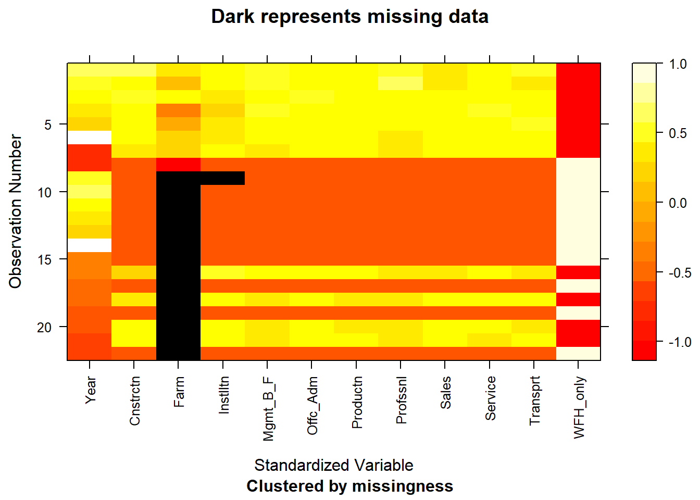
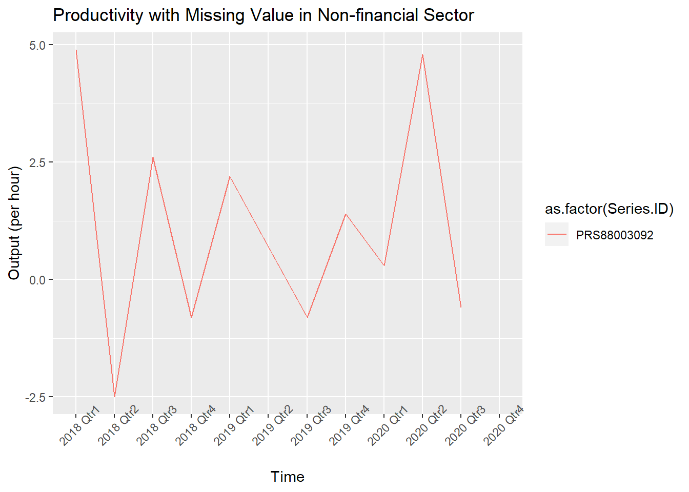

Chapter 4 Missing values
4.1 Missing data in WFH employees’ population by occupation sectors
Below is a table that summarized the missing data in WFH employees population by sectors over time.
## Year Construction Farm Installation Mgmt_Bus_Fin Office_Admin
## 0 0 14 1 0 0
## Production Professional Sales Service Transport WFH_only
## 0 0 0 0 0 0## NOTE: In the following pairs of variables, the missingness pattern of the second is a subset of the first.
## Please verify whether they are in fact logically distinct variables.
## [,1] [,2]
## [1,] "Farm" "Installation"
We can see that for the data set that describes WFH population before COVID, occupation sectors such as Farming, Fishing and Forestry contains lots of missing summary data. That is likely due to the fact that workers from Farming Sectors are likely working from “home” and the standard of telework is not clearly defined for them. Also, it is noticed on the documentation of the data tables that effective with January 2011 data, occupations reflect the introduction of the 2010 Census occupational classification system. Data for 2011 and later are not strictly comparable with earlier years.
4.2 Missing data in Productivity features
## Series.ID Year Period Label Value
## 8 PRS88003092 2019 Q04 2019 Qtr4 1.4
## 9 PRS88003092 2020 Q01 2020 Qtr1 0.3
## 10 PRS88003092 2020 Q02 2020 Qtr2 4.8
## 11 PRS88003092 2020 Q03 2020 Qtr3 -0.6## Series.ID Year Period Label Value
## 9 PRS88003092 2020 Q01 2020 Qtr1 0.3
## 10 PRS88003092 2020 Q02 2020 Qtr2 4.8
## 11 PRS88003092 2020 Q03 2020 Qtr3 -0.6
## 12 PRS88003092 2020 Q04 2020 Qtr4 NA
For non-financial-corporation, there are only 11 rows. Productivity for the fourth quarter of 2020 is missing. However, this does not affect the analysis for productivity when plotting the time series plot. For the scatterplot, we will trimmed the WFM data to make sure two data frames are matched with no missing values. (Trimmed data is included in data transformation part.)